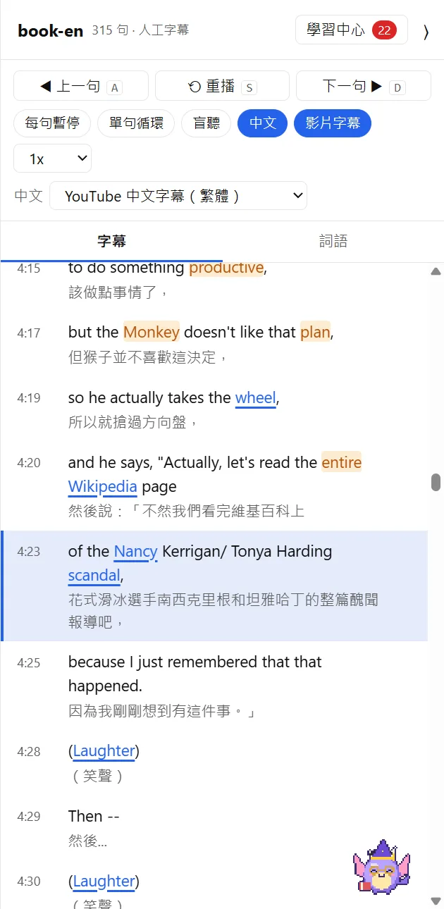
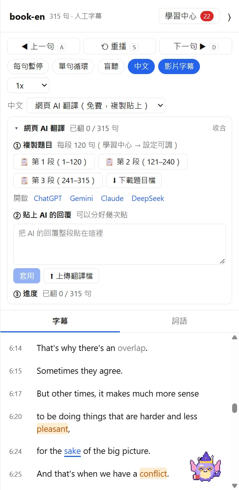

雙語字幕
每一句英文旁邊，
每一句英文旁邊，
都有看得懂的中文
英文字幕自動整理成完整句子，中文可以自己挑來源：
- YouTube 中文字幕、Google 自動翻譯
- 本機 AI 翻譯（Claude Code、Codex、Antigravity、Gemini CLI）
- 沒裝 AI 也行：把題目貼到免費的 ChatGPT、Gemini 網頁，再貼回來
- 翻好的字幕會存檔，下次打開直接用

